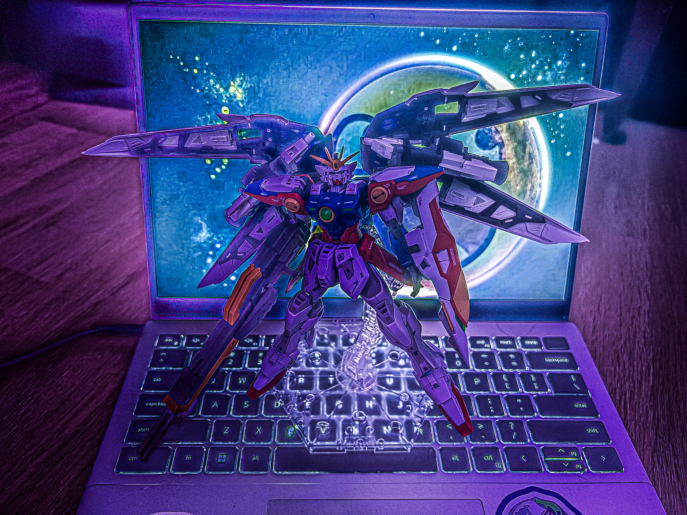
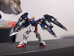
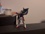
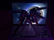
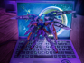
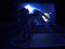

The RG Wing Zero TV posed in my main room but the photo's, like, edited.





I built the RG Wing Zero TV. I had the energy to pose it this time around and I’m not quite sure why. I’ve been building all this time. Well actually, no, I took a break between September, I think, and now. I just stopped having the will to build. I was revising Island Off Outer Darkness.
I took place in a game jam between January 30th and February 8th. It was a friend’s idea, to gather me and another friend and an acquaintance of a friend. The acquaintance of a friend and I did the majority of the work, I stepped up in project management and direction after the friend who had the idea repeatedly failed to do any of the work needed to lead a project. It was exhausting. I am exhausted. And now I’m building model kits again.
Out To Pasture, by Good Morning.